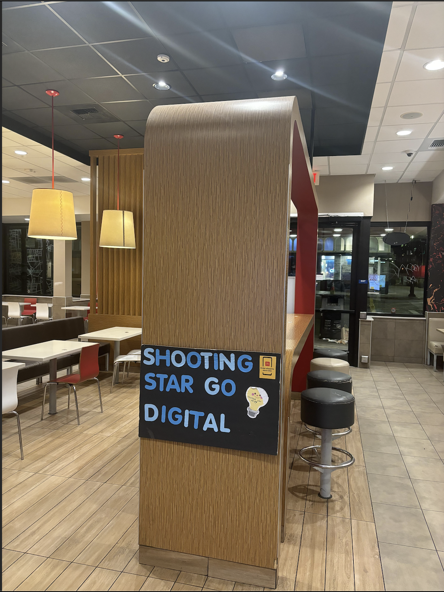
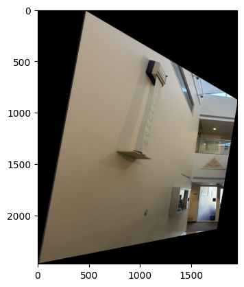

The goal of this project was to delve into various aspects of image warping by creating image mosaics. By taking two or more photographs and stitching them together, I explored techniques such as recovering homographies, projective warping, resampling, and compositing images. This involved computing homographies and using them to warp images into alignment, ultimately blending them to create seamless mosaics.
Shooting the Pictures
I captured three pairs of images with significant overlap from different angles to ensure the transforms between them are projective. The pairs include images of McDonald's, Soda Hall, and my room.
McDonald's Image 1

McDonald's Image 2
Two different angles of McDonald's.
Soda Hall Image 1Soda Hall Image 2
Two different angles of Soda Hall.
Room Image 1Room Image 2
Two different angles of my room.
Recovering Homographies
To align the images, I needed to compute the homography matrix H that maps points from one image to corresponding points in another. Given a set of corresponding points between two images, the goal is to find H such that:
[ x' y' 1 ]T = H * [ x y 1 ]T
Where (x, y) are points in the first image, and (x', y') are the corresponding points in the second image.
The homography matrix H has 8 degrees of freedom (since it's a 3x3 matrix defined up to scale). To solve for H, I set up a system of linear equations using the correspondences:
x' = (h11 x + h12 y + h13) / (h31 x + h32 y + h33)
y' = (h21 x + h22 y + h23) / (h31 x + h32 y + h33)
Multiplying both sides to eliminate denominators and rearranging, we get linear equations in terms of the elements of H:
-h11 x - h12 y - h13 + h31 x x' + h32 y x' + h33 x' = 0
-h21 x - h22 y - h23 + h31 x y' + h32 y y' + h33 y' = 0
By stacking these equations for all correspondences, we form a system A * h = 0, where h is a vector containing the unknown elements of H. This system is homogeneous and can be solved using Singular Value Decomposition (SVD). The solution corresponds to the right singular vector associated with the smallest singular value of A.
Warping Images
With the homography matrix computed, I warped one image onto the plane of the other using inverse warping. This involves mapping pixels from the output image back to the input image to avoid holes and ensure proper sampling.
Soda Hall Correspondences 1Soda Hall Correspondences 2
After selecting corresponding points (as shown above), I warped each image onto the other's plane.

Warped Soda Hall Image 1 onto Image 2Warped Soda Hall Image 2 onto Image 1
Image Rectification
Image rectification involves warping an image so that a selected planar surface is frontal-parallel, correcting for perspective distortion. By specifying correspondences between the corners of a planar object in the image and a rectangle, I computed the homography to perform rectification.
Original Winter ImageRectified Winter Image
Original Gundam ImageRectified Gundam Image
Blending Images to Create Mosaics
After warping images into the same plane, the next step was to blend them seamlessly into a mosaic. I used weighted averaging with an alpha mask to smooth the transitions between images. By calculating the distance transform from the edges of each image, I assigned higher weights to pixels near the center and lower weights near the edges.
The blending process involved creating low-pass and high-pass filtered versions of the images and combining them using the calculated weights. This approach minimizes artifacts and ensures a smooth blend between overlapping regions.
Soda Hall Image 1Soda Hall Image 2Soda Hall Mosaic
Room Image 1Room Image 2Room Mosaic
Part 2: Automatic Image Stitching
The goal of this part was to create a system for automatically stitching images into a mosaic. Instead of manually selecting correspondences, I implemented an automated pipeline that detects features, matches them, and computes the homography robustly.
Detecting Corner Features
To detect feature points, I used the Harris Interest Point Detector. The function get_harris_corners computes the Harris response for each pixel and selects points where the response is above a threshold.
Harris Corners detected in the image.
To reduce the number of points and select the most significant corners, I implemented Adaptive Non-Maximal Suppression (ANMS). The function identifies corners that are both strong and well-distributed across the image.
ANMS-selected corners overlaid on the image.
Extracting Feature Descriptors
For each selected corner, I extracted a 40x40 pixel window centered at the corner, applied a Gaussian blur, and then downsampled it to an 8x8 patch. This results in a feature descriptor that is robust to small shifts and noise. The descriptors are then bias and gain normalized.
Matching Feature Descriptors
To match features between images, I compared the descriptors using Euclidean distance. I applied Lowe's ratio test to ensure robust matching by selecting pairs where the ratio of the distance to the nearest neighbor and the second nearest neighbor is below a threshold.
Feature matches with a low ratio threshold.Feature matches with a higher ratio threshold.
Computing Homography with RANSAC
To compute a robust homography, I implemented RANSAC (Random Sample Consensus). The function iteratively selects random subsets of correspondences to compute homographies and evaluates them based on the number of inliers within a threshold distance. The best homography with the highest inlier count is selected.
Inlier matches after applying RANSAC.
Creating Mosaics with Automatic Stitching
Using the computed homographies from the automatic pipeline, I proceeded to create mosaics similarly to the manual approach. Below are comparisons between mosaics created with manual correspondences and those created with automatic correspondences.